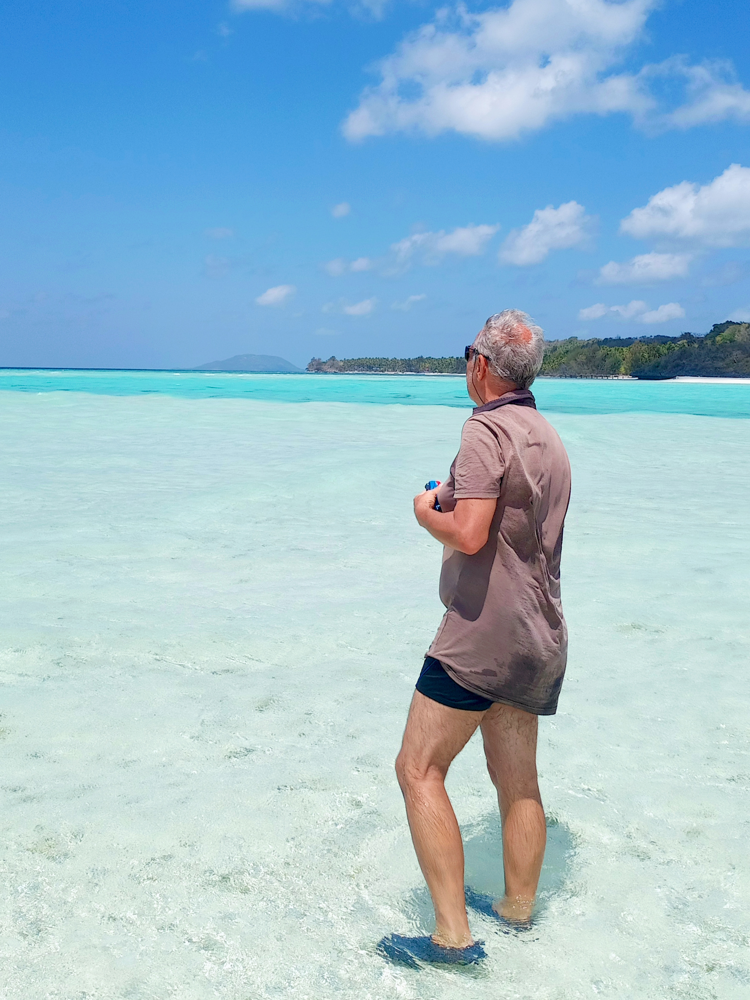
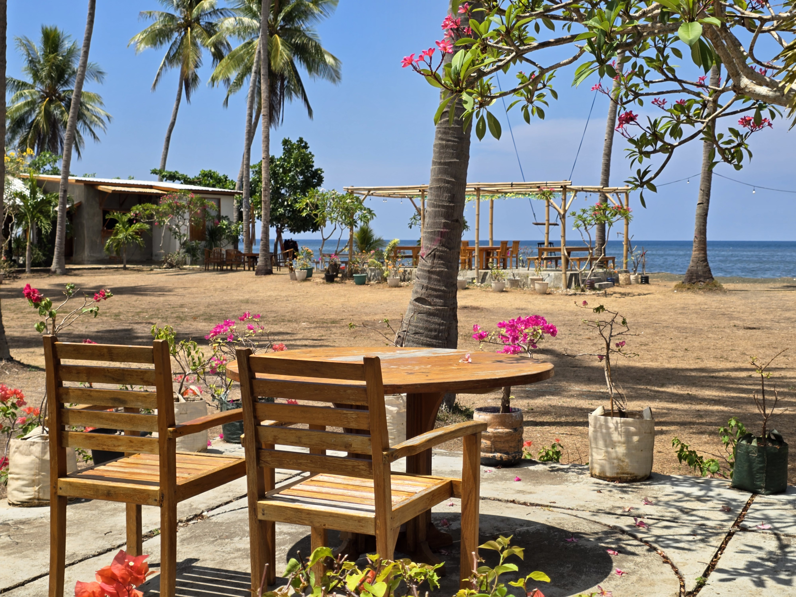
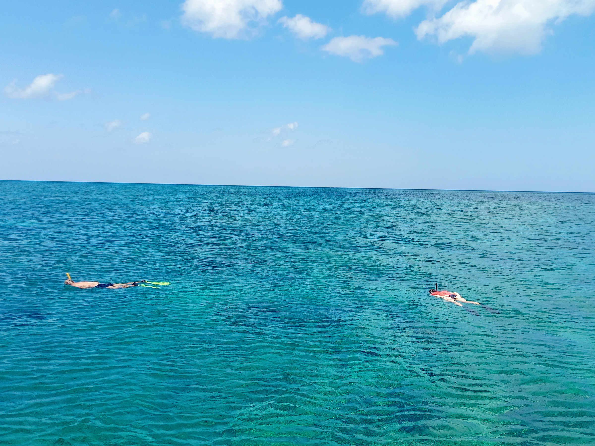
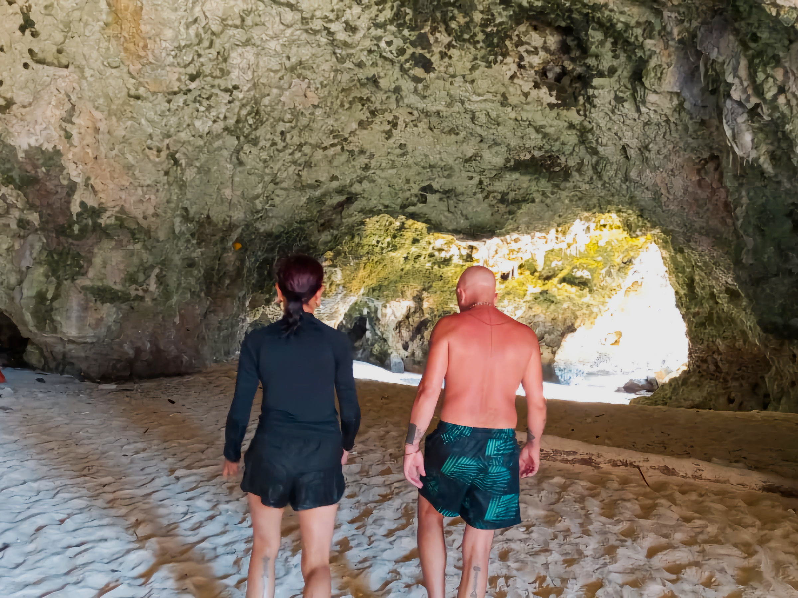

Dari SunaRi ke Bahuluang
Sehari ke
Bahuluang
Pagi berangkat dari SunaRi, senja sudah kembali
Ketuk untuk lanjut →


02 — 10
Dari SunaRi ke Bahuluang± 07.00
Semua dimulai dari SunaRi
Sarapan pelan di Bajoy Beach Resto sambil memandang laut. Siapkan baju renang, topi, dan tabir surya.

03 — 10
Dari SunaRi ke Bahuluang± 08.00
Darat, lalu laut
Sekitar satu jam berkendara ke Desa Turungan, lalu menyeberang dengan kapal. Pulau Bahuluang perlahan mendekat.

04 — 10
Dari SunaRi ke Bahuluang± 10.00
Menyapa Makam Karang
Spot snorkeling dengan formasi karang yang unik. Airnya jernih, ikan-ikan kecil datang menyapa.

05 — 10
Dari SunaRi ke Bahuluang± 11.00
Pasir yang muncul
Pasir Timbul Bahuluang muncul di tengah laut saat air surut. Kalau beruntung, kamu bisa berjalan di atasnya.

06 — 10
Dari SunaRi ke Bahuluang± 12.00
Makan siang di pasir putih
Rehat di Pantai Bahuluang. Lunchbox, air toska, dan tidak ada yang perlu dikejar.

07 — 10
Dari SunaRi ke Bahuluang± 13.00
Masuk ke Gua Lipang
Gua pesisir dengan lengkungan batu kapur, dibentuk laut selama ribuan tahun.

08 — 10
Dari SunaRi ke Bahuluang± 13.30
Sejuk di dalam
Stalaktit menggantung di atas kepala. Dari dalam gua, cahaya laut terlihat di ujung lorong.

09 — 10
Dari SunaRi ke Bahuluang± 16.00
Pulang, senja menunggu
Sekitar pukul empat sudah kembali di SunaRi. Mandi, rebahan sebentar, lalu duduk di Pantai Sunari menunggu matahari tenggelam.

Simpan alurnya
Satu hari, satu pulau
07.00Sarapan di SunaRi
08.00Darat ke Desa Turungan, menyeberang
10.00Snorkeling Makam Karang
11.00Pasir Timbul (saat surut)
12.00Makan siang di Pantai Bahuluang
13.00Jelajah Gua Lipang
16.00Kembali ke SunaRi, menunggu senja
Ingin ke Bahuluang saat menginap?
Biar kami bantu atur.
Info & reservasi
WhatsApp 0821-8903-3044
#sunarisunsetmoment